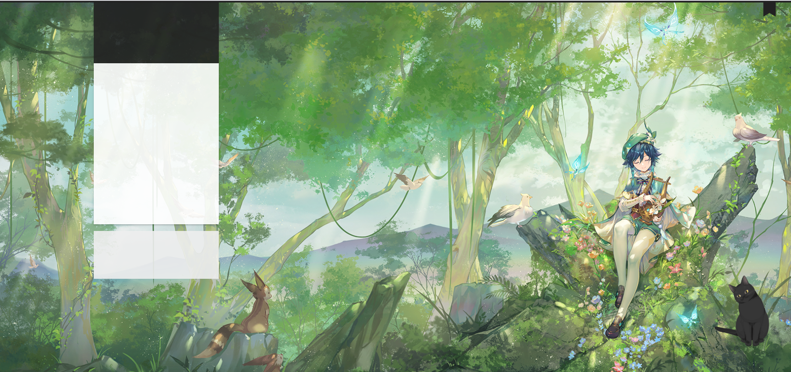

记博客第一次崩溃
摘要
记博客第一次崩溃，修了一天，曲折。
直接重装换个版本吧。
正文
原来的next突然出了问题，打开是空白，如下图

然后我粗略一排查，发现是主题的问题。
我就想着既然如此，我不如乘这个机会换一个主题。然后就换为Aurora主题，别说这个主题还听炫酷的，科技风。
但很可惜的是弄了一下午，发现公式渲染出了问题。无奈，不写公式是不可能的，再好看的主题都不能用了。
然后还是重新下了一个next主题，从头又美化了一边，发现安装左下角的切换黑夜模式就会出bug，只能又舍弃了这个功能，随后又发现点击图片放大功能也会导致页面崩溃。又砍了，现在只剩这只猫了。
5月28日更新，居然还有遗留bug！
干脆从hexo开始重装！把这些功能都拉回来。
重装需要的包
备注：
站点配置指修改站点文件夹的_config.yml文件
主题配置文件指\themes\next\_config.yml文件
1. 看板娘小黑猫
1 | npm install --save hexo-helper-live2d |
添加站点配置 1
2
3
4
5
6
7
8
9
10
11
12
13
14
15
16
17
# live2d
live2d:
enable: true
scriptFrom: local
pluginRootPath: live2dw/
pluginJsPath: lib/
pluginModelPath: assets/
tagMode: false
model:
use: live2d-widget-model-hijiki #选择哪种模型
display: #放置位置和大小
position: right
width: 150
height: 300
mobile:
show: false #是否在手机端显示
2. 计数君
这个在next8.12.1版本不支持了。 1
npm install hexo-symbols-count-time
1
2
3
4
5
6
7
8
9
10
11# 设置博客单词统计
symbols_count_time:
# 文章字数统计
symbols: true
# 文章阅读时间统计
time: true
# 站点总字数统计
total_symbols: false
# 站点总阅读时间统计
total_time: false
exclude_codeblock: false
修改NexT主题配置文件 1
2
3
4
5
6
7
8
9
10
11
12
13
14# Post wordcount display settings
# Dependencies: https://github.com/theme-next/hexo-symbols-count-time
# 设置博客单词统计
symbols_count_time:
# 是否另起一行（true的话不和发表时间等同一行）
separated_meta: true
# 首页文章统计数量前是否显示文字描述（本文字数、阅读时长）
item_text_post: true
# 页面底部统计数量前是否显示文字描述（站点总字数、站点阅读时长）
item_text_total: false
# 平均字长
awl: 4
# 每分钟阅读字数
wpm: 275
3. 搜索功能
1 | npm install hexo-generator-searchdb --save |
修改主题配置文件 1
2
3
4
5
6
7
8
9
10
11
12
13# Local Search
# Dependencies: https://github.com/theme-next/hexo-generator-searchdb
local_search:
enable: true
# If auto, trigger search by changing input.
# If manual, trigger search by pressing enter key or search button.
trigger: auto
# Show top n results per article, show all results by setting to -1
top_n_per_article: 1
# Unescape html strings to the readable one.
unescape: false
# Preload the search data when the page loads.
preload: false
4. 公式问题
5.修改标签
在\themes\next\layout\_macro\post.swig文件中
把#改为<i class="fa fa-tag></i>如下
1 | <footer class="post-footer"> |
6. 切换夜间模式
这个也可能有bug
1 | npm install hexo-next-darkmode --save |
主题文件添加 1
2
3
4
5
6
7
8
9
10
11
12
13
14
15
16
17# Darkmode JS
# For more information: https://github.com/rqh656418510/hexo-next-darkmode, https://github.com/sandoche/Darkmode.js
darkmode_js:
enable: true
bottom: '64px' # default: '32px'
right: 'unset' # default: '32px'
left: '32px' # default: 'unset'
time: '0.5s' # default: '0.3s'
mixColor: 'transparent' # default: '#fff'
backgroundColor: 'transparent' # default: '#fff'
buttonColorDark: '#100f2c' # default: '#100f2c'
buttonColorLight: '#fff' # default: '#fff'
isActivated: false # default false
saveInCookies: true # default: true
label: '🌓' # default: ''
autoMatchOsTheme: true # default: true
libUrl: # Set custom library cdn url for Darkmode.js
7. 图片放大
到next/source/lib 1
git clone https://github.com/theme-next/theme-next-fancybox3 fancybox
更改主题配置文件 1
fancybox: true
8. 装个deployer
1 | npm install hexo-deployer-git --save |
9. RSS
https://blog.csdn.net/qq_36537546/article/details/90730068